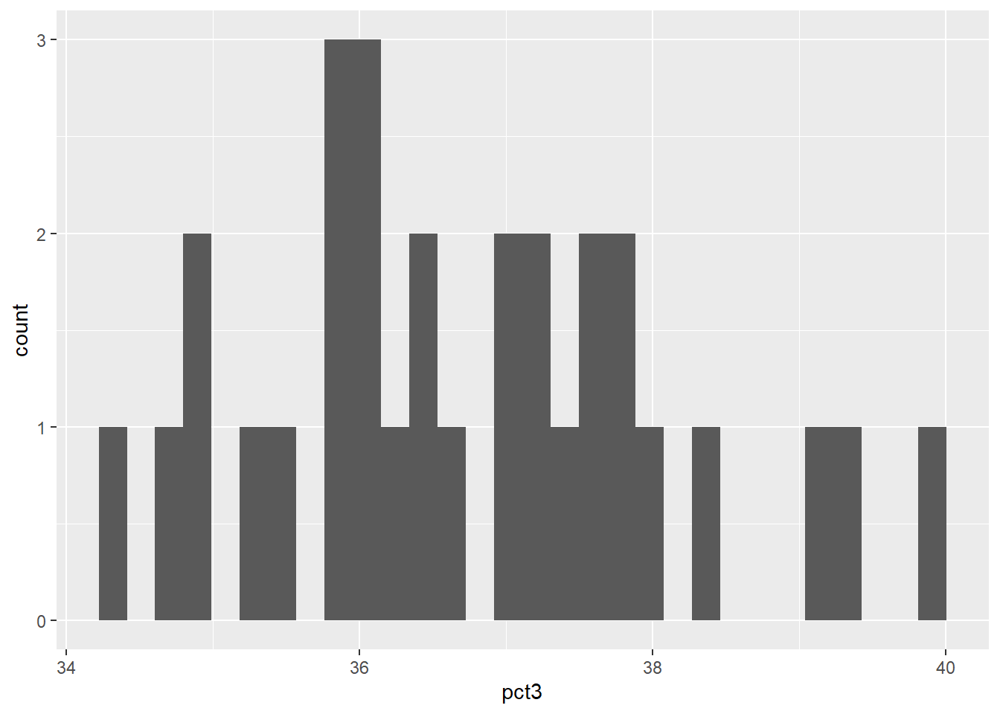
Data Visualization in R
Asignatura de INICIACIÓN PRÁCTICA A LA GESTIÓN DE DATOS AMBIENTALES CON R (100303)
1. Introducción a la sintaxis de ggplot2
2. Datos que utilizaremos en el guión
Para esta práctica utilizamos datos de la NBA de la temporada 2023/24 (en curso) a través del paquete nbastatR . Será necesario también tener instalados los paquetes de tidyverse y algunos paquetes adicionales para ayudar a la visualización: ggdist , ggrepel, cowplot , ggthemes y ggdark .
Después de instalarlos, cargamos las bibliotecas:
Y cargamos las diferentes bases de datos que vamos a utilizar del repositorio.
3. Estudiar distribuciones de nuestras variables
Estudiar la composciión y distribución de nuestras variables es fundamental antes de cualquier otro análisis. Esto implica ver qué rango de valores adopta, qué frecuencia toma cada valor y qué función de distribución se ajusta mejor a nuestros datos (ej. normal, poisson, log-normal, etc).
Para ello, lo más útil son los histogramas.
Ejemplo 1. Porcentaje de triples:
Vamos a usar la base de datos season_average_data (echadle un ojo primero al aspecto que tiene). Vamos a ver cómo se distribuyen los porcentajes de acierto en triples en todos los equipos.
Buscamos un histograma: geom_histogram()
Nos hacemos ya una idea de valores. Vamos a ajustarlo un poco para llegar a la siguiente figura:
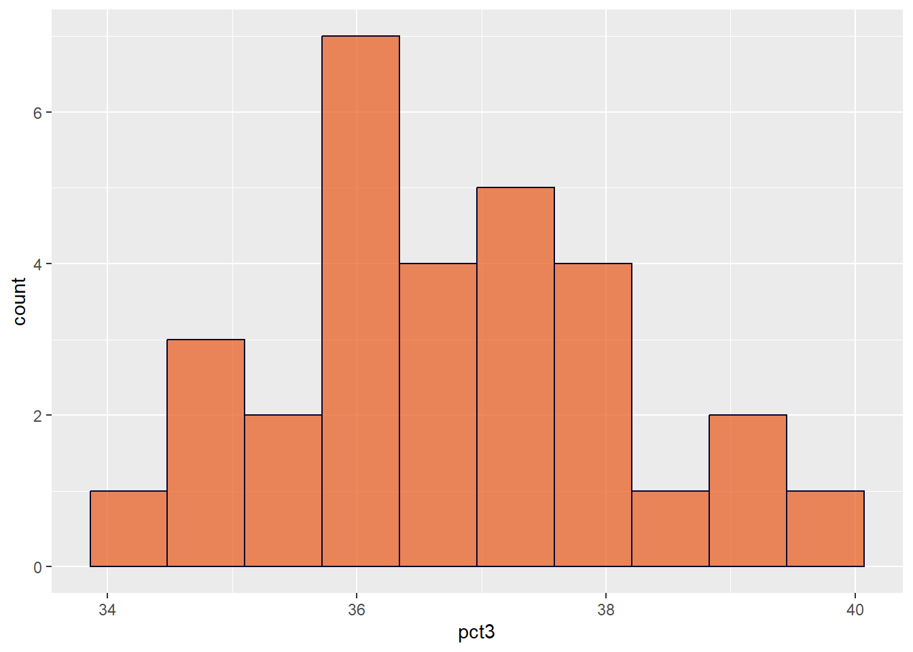
Y ahora vamos a personalizar un poco:
Añadir una línea vertical en la media y en la mediana de acierto en triples
Cambiar los nombres de los ejes a: “% Acierto en Triples” y “Frecuencia”
Vamos a usar un tema del paquete
ggthemes
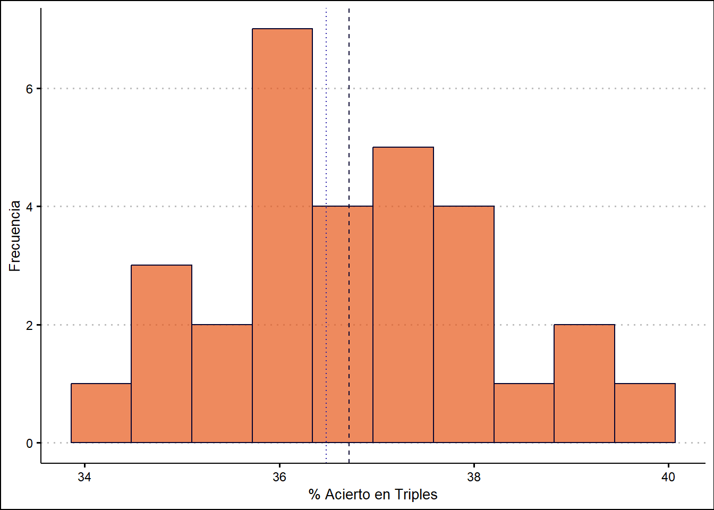
Podemos hacer exactamente lo mismo con una curva de frecuencia continua (density) en vez de discreta (bins). Lo hacemos con geom_density()
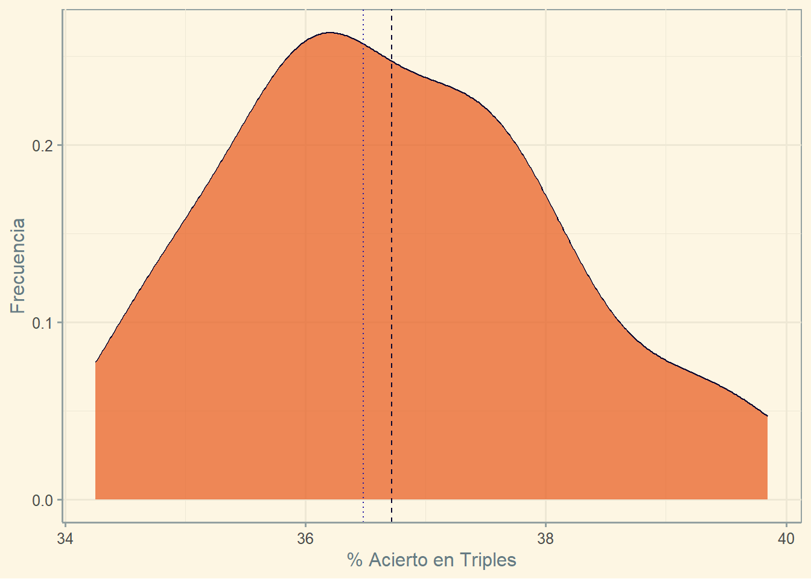
Ejemplo 2. Figuras compuestas:
Vamos a juntar en una misma figura un histograma de triples encestados (fg3m) y de tiros de campo intentados (fga). Lo haremos con cowplot. Para ello, los pasos son:
- Diseñar un título con
ggdraw() + draw_label() - Diseñar la figura de
fg3m - Diseñar la figura de
fga - Unir la fila de figuras con
plot_grid() - Componer la figura total con
plot_grid()
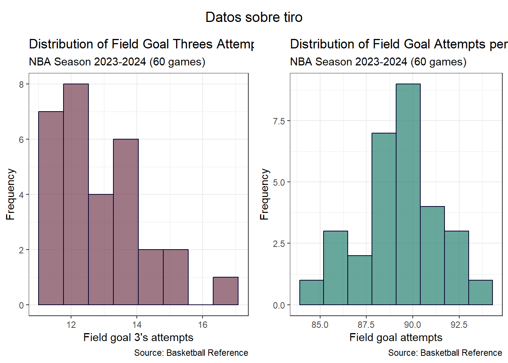
Ejercicio 1. Estudiar los tiros libres intentados por partido:
Esta variable se llama fta (free throw attempts) en la base de datos de season_average_data . Hay que lograr una figura como la siguiente: ¿cómo lo haríais?
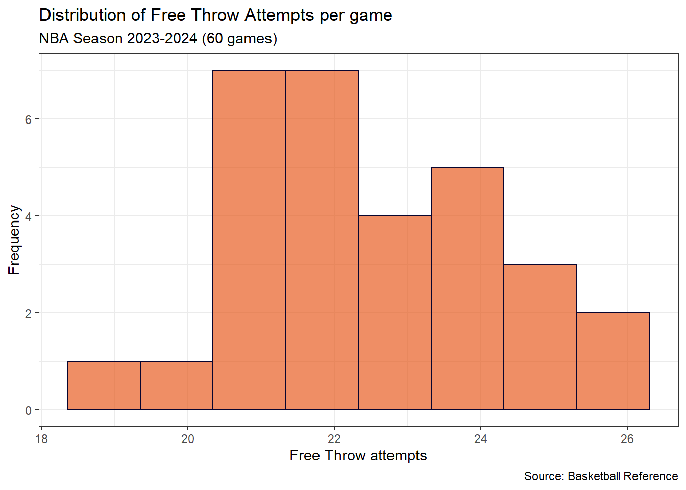
Ejercicio 2. Figura compuesta de porcentajes de tiros (triples, tiros de dos, tiros libres)
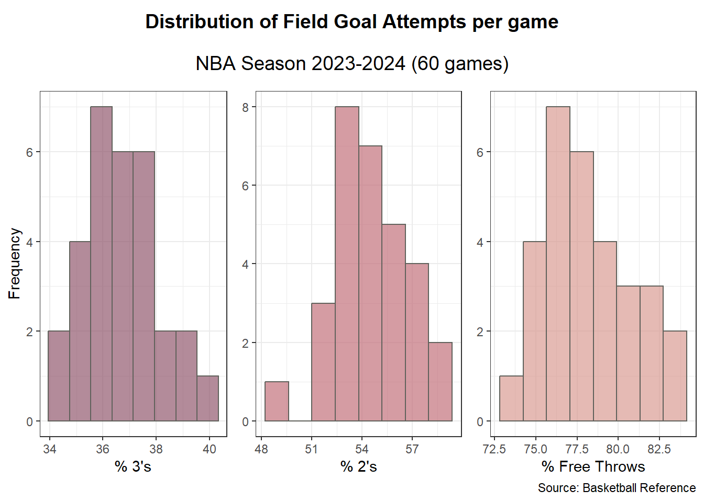
4. Comparar variables categóricas
Para comparar variables categóricas podemos utilizar distintos tipos de gráficas. Las más comunes son gráficos de barras o barplots, gráficos de caja-bigotes o boxplots y sus variantes.
Barplots
Son las más utilizadas aunque tengan ciertos problemas que luego veremos.
Con ggplot, utilizaremos la función geom_barplot() con el argumento stat = "identity" .
Ejemplo 1. Clasificación de equipos por número de victorias
Vamos a ver el ejemplo más básico sin ningún argumento más.
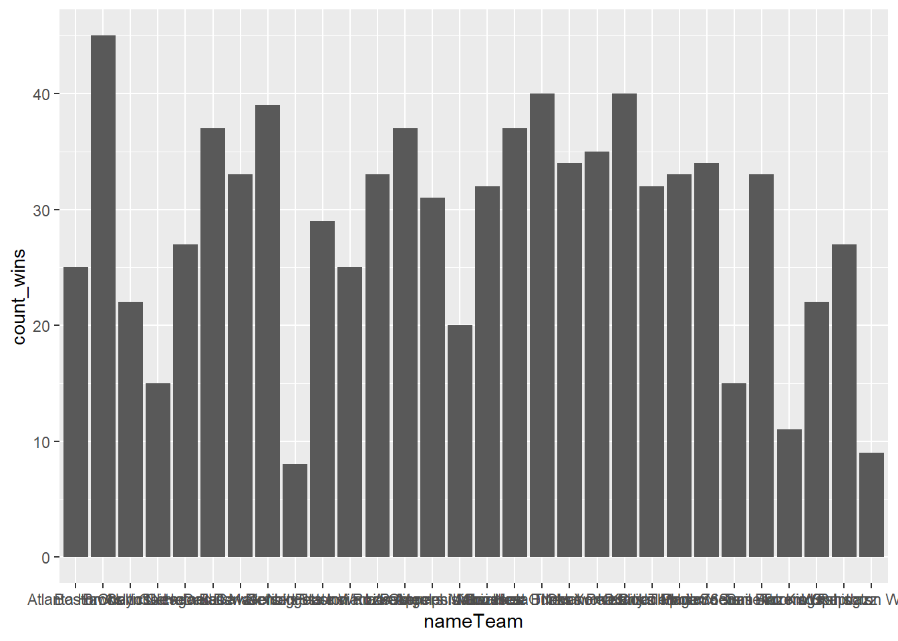
Esto no nos indica demasiado. Vamos a mejorar la gráfica:
- Intercambiar los ejes para que se lean los equipos con
coord_flip()
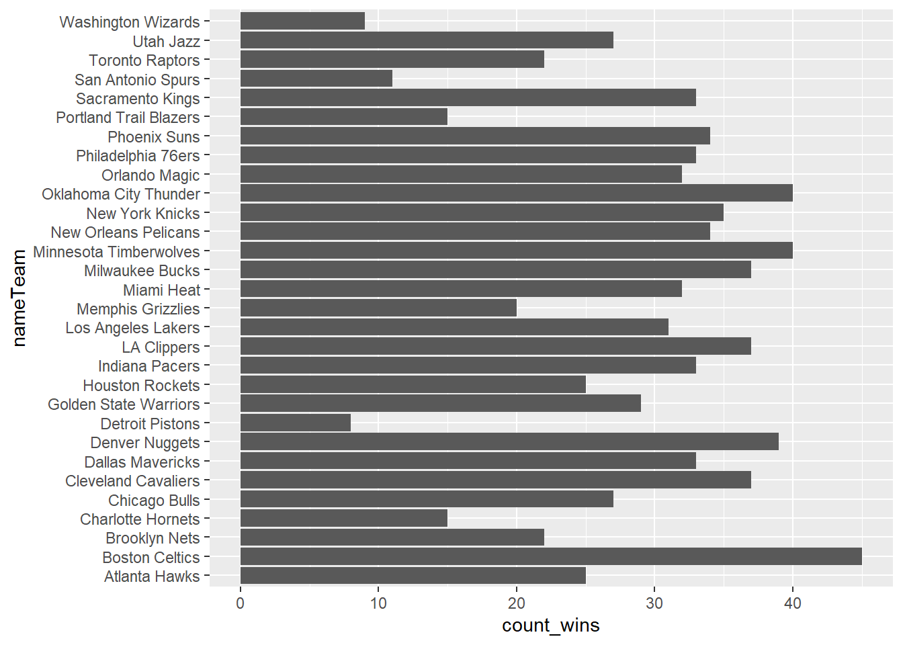
Ordenar de menor a mayor con la función
fct_reorderdel paqueteforcats.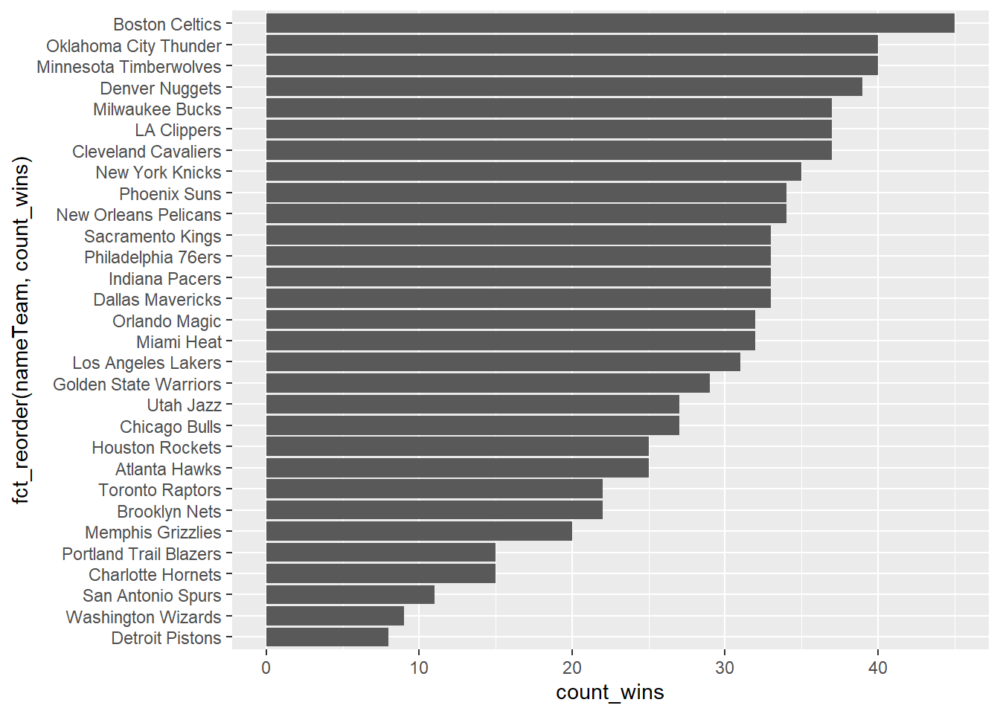
Colorear por número de victorias (no se muestra)
Colorear por porcentaje de triples
Personalizar ejes
Dividir por conferencias Este y Oeste
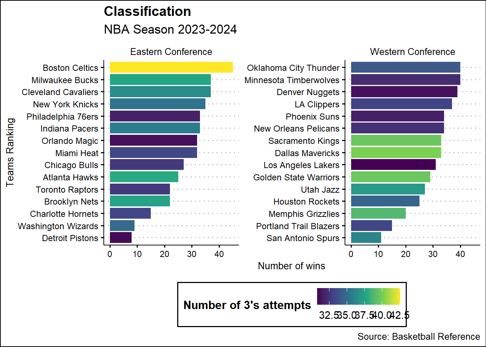
Ejercicio 3. Clasificación de mejores equipos de cada conferencia:
Hacer una figura compuesta con la clasificación de cada conferencia (Este y Oeste) en las siguientes categorías.
Porcentaje de acierto en triples
pct3Rebotes
trebAsistencias
astPorcentaje de acierto en tiros de campo
pctfg
Las barras deben estar coloreadas en función de la variable puntos por partido (pts).